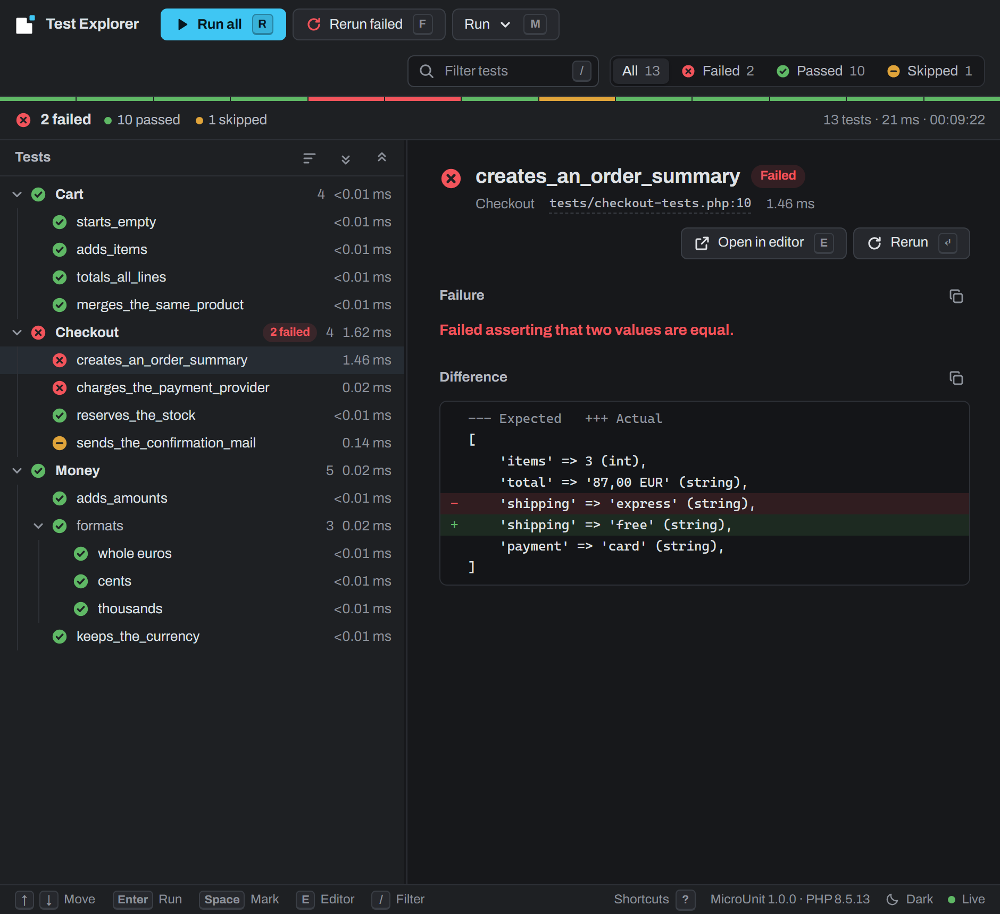

A new way to
test PHP.
Built for today.
microunit
MinimalModernMighty
The dependency-free testing framework for PHP. Version 1.0.
Writing tests
Tests that read like
a description.
Configuration
Every detail, configurable.
It runs out of the box. When your test pipeline needs more, it all goes in one PHP file.
withTestDirwithTestGroupwithBootstrapFilewithCoveragewithTestExplorer
Shape the whole pipeline.Groups, parallel runs, coverage gates, reports, the Explorer, your framework.
Every option, autocompleted.Methods your editor knows, with named arguments.
Plain PHP, so it can branch.Read the environment, add CI-only settings.
Benchmark · full test suite
Faster than PHPUnit.
On real projects.
6 real projects, the same tests
AI coding agents
Works with
the agents
writing your tests.
Readable for you, compact for agents.Agents get only the failures, as JSON.
Catches tests weakened to pass.Removed assertions, new skips, changed expectations.
Teaches your agent MicroUnit.init --skill installs a skill file.
Everything in the box
Zero dependencies.
Batteries included.
Mocks and spiesSnapshotsData sets and fixtures
Coverage without XdebugParallel runsTest Explorer
JUnit, HTML, GitHub annotationsLaravel · Symfony · CodeIgniter
Test Explorer
Every test,
one click away.


Coming from PHPUnit
Bring your tests along.
microunit
A new way to test PHP. Built for today.
composer require --dev microunit/microunit
mitarnik04.github.io/MicroUnit